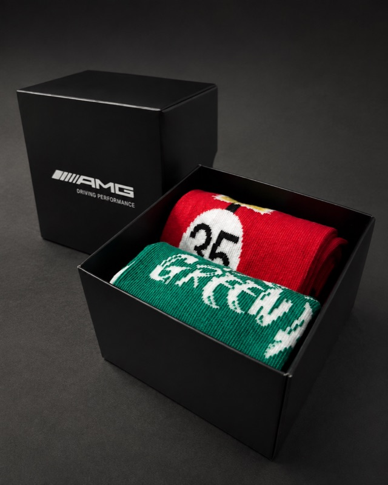
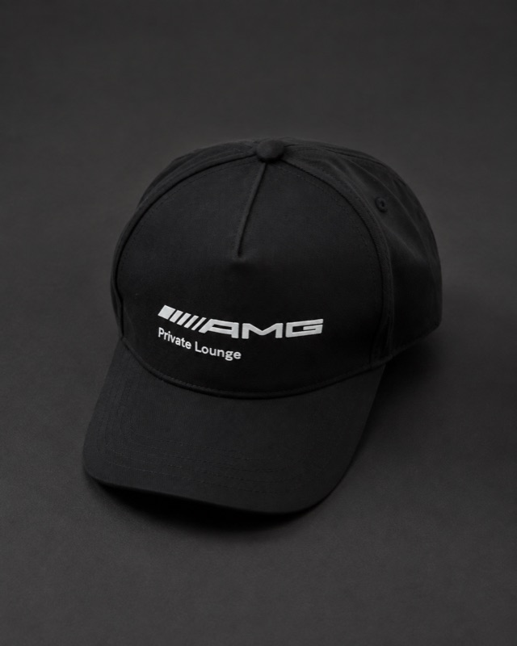
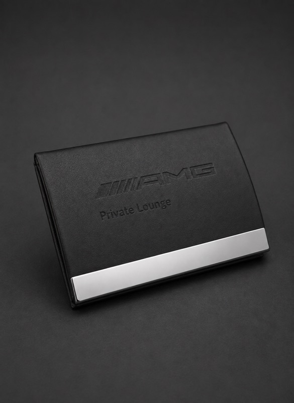
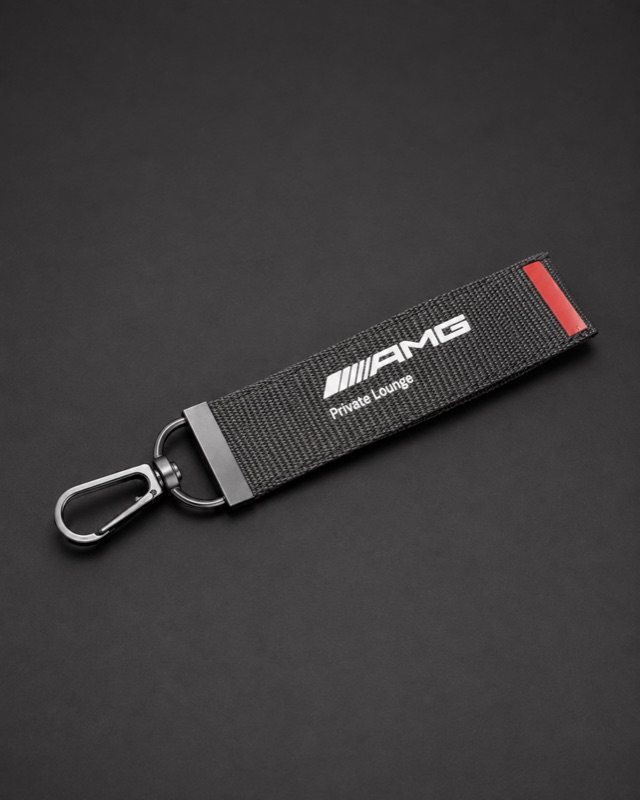
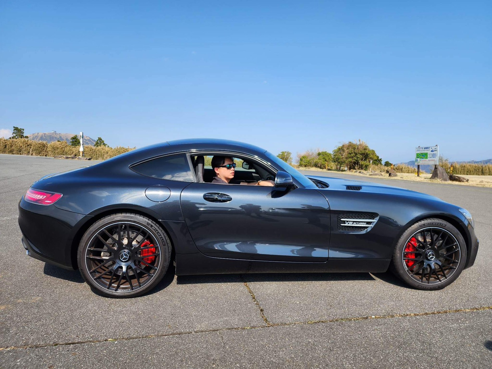
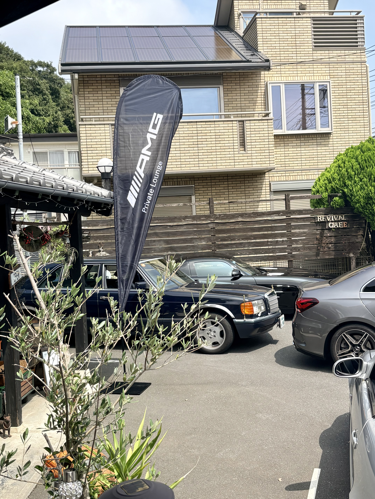

アカウント登録
Mercedes-AMG公式サイトでアカウントを登録します。Mercedes me IDをお持ちの方は、同じ情報でログインできます。

AMG PRIVATE LOUNGE TOKYO
AMGと楽しむ時間を、仲間と。
登録から東京ハブへの参加まで、
日本語でわかりやすくご案内します。
登録済みの方は 公式Tokyo Hubページへ ↗
YOUR FIRST STEP
英語のサイトでも大丈夫。日本語ガイドを見ながら、3つのステップで東京ハブへ。
Mercedes-AMG公式サイトでアカウントを登録します。Mercedes me IDをお持ちの方は、同じ情報でログインできます。
車両のVIN（車台番号）を登録し、AMGオーナー向けコンテンツへのアクセスを有効にします。
Tokyo Hubのページで「Join group」を選択。イベント情報を確認し、興味のある集まりにご参加ください。
詳しい操作は日本語PDFまたは動画でご確認いただけます。
本サイトの日本語ガイドで、アカウント登録から東京ハブへの参加までの流れをご案内しています。公式サイトの操作に不安がある方は、まずPDFまたは動画をご覧ください。
VINは車両を識別する車台番号です。AMGオーナー向けコンテンツを利用するため、公式サイトに登録します。入力する画面は日本語ガイドでご確認ください。
公式サイトにログインし、Tokyo Hubページの「Join group」を選択してください。アカウント登録とは別に、東京ハブへの参加操作が必要です。
各イベントの「イベントを見る」からAMG Private Lounge公式サイトへ進み、参加条件・費用・申込方法をご確認ください。本サイトではイベントの申込を受け付けていません。
A LITTLE EXTRA FROM AMG
AMG Germanyから届くグッズも、イベントの楽しみのひとつ。仲間と過ごす時間に、AMGならではの彩りを添えてくれます。
※写真はグッズの一例です。内容・配布の有無はイベントにより異なります。




ABOUT TOKYO HUB
AMG Private Lounge 東京ハブは、Mercedes-AMG GermanyのPrivate Loungeネットワークに登録された東京の公式ハブです。
2025年8月に発足し、現在は130名以上のメンバーが参加しています。これまで20件以上のイベントを企画・開催し、ドライビング体験や交流イベントを通じて、AMGオーナー同士のつながりを育てています。

Mercedes-AMG Germanyが運営するPrivate Loungeのローカルハブです。
 Mercedes-AMG Germanyより東京ハブへ提供された公式エンブレムです。
Mercedes-AMG Germanyより東京ハブへ提供された公式エンブレムです。
運営はメンバー有志が行い、イベントは基本的に実費ベースです。
安全で記憶に残る、AMGらしい体験を大切にしています。
HUB MANAGER

東京ハブはボランティアベースで運営されています。AMGという共通の情熱を持つメンバーが、自然につながり、長く続くコミュニティになることを目指しています。
「クルマを楽しむ」だけでなく、人と人のつながりを大切にしています。
お問い合わせはこちらMEMBER SPOTLIGHT

2026年8月
F1観戦を通じ、運転を始める前からクルマへの情熱を育んできました。なかでもサーキットに登場するAMG V8セーフティカーの力強く特徴的なサウンドに魅了され、以来AMGブランドとパフォーマンスドライビングはL-sanにとって大切な存在です。
日本では、サーキット走行やナイトドライブ、優れた自動車工学への情熱を共有する仲間とつながり、交流を深めていきたいと考えています。Tokyo Hubのファウンディングメンバーとして、皆さんとストーリーを分かち合い、一緒に走れることを楽しみにしています。
これまでのMember Spotlightを見るUPCOMING EVENTS
TOKYO HUB EXPERIENCES
Tokyo Hubでは、ドライブ、モータースポーツ、クルマ文化、そしてメンバー同士の交流を大切にした、さまざまな体験を企画しています。
富士スピードウェイでの走行体験や、三浦半島、日光・中禅寺湖への季節のドライブなど、AMGならではの走りと景色を楽しむイベントを開催しています。
Tokyo Hub初のカート大会や、WEC富士6時間レース観戦など、AMGのパフォーマンスやモータースポーツの魅力をメンバー同士で楽しんでいます。
Mercedes me GinzaでのAMGブランドスニーカーのローンチイベント、忍城ドライブ、ワクイミュージアム訪問など、クルマを通じた文化や発見も大切にしています。
Aoyama Social NightやMercedes-Benz浦安でのCars & Coffeeなど、気軽に集まり、会話を楽しみ、メンバー同士のつながりを育てる場も企画しています。



PARTNERS
テクニカルパートナーとして、東京ハブの活動をサポートいただいています。
独立系Mercedes-Benz / AMG専門工場として、東京ハブメンバーをサポートいただいています。
横浜を拠点とする高級車・パフォーマンスカー向けのカーコーティング・ディテイリング専門店として、Tokyo Hubメンバー向けに優待料金をご提供いただいています。